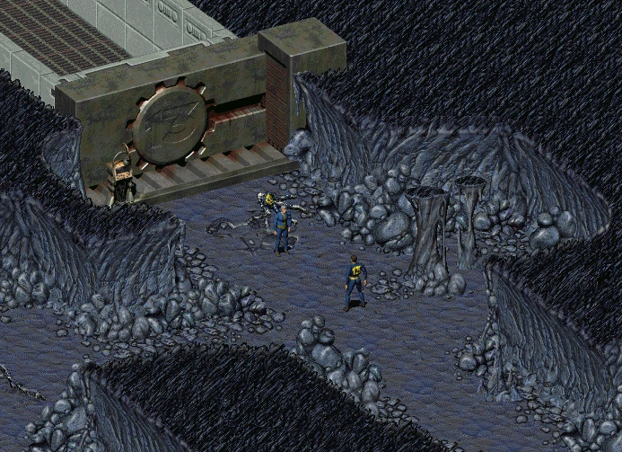
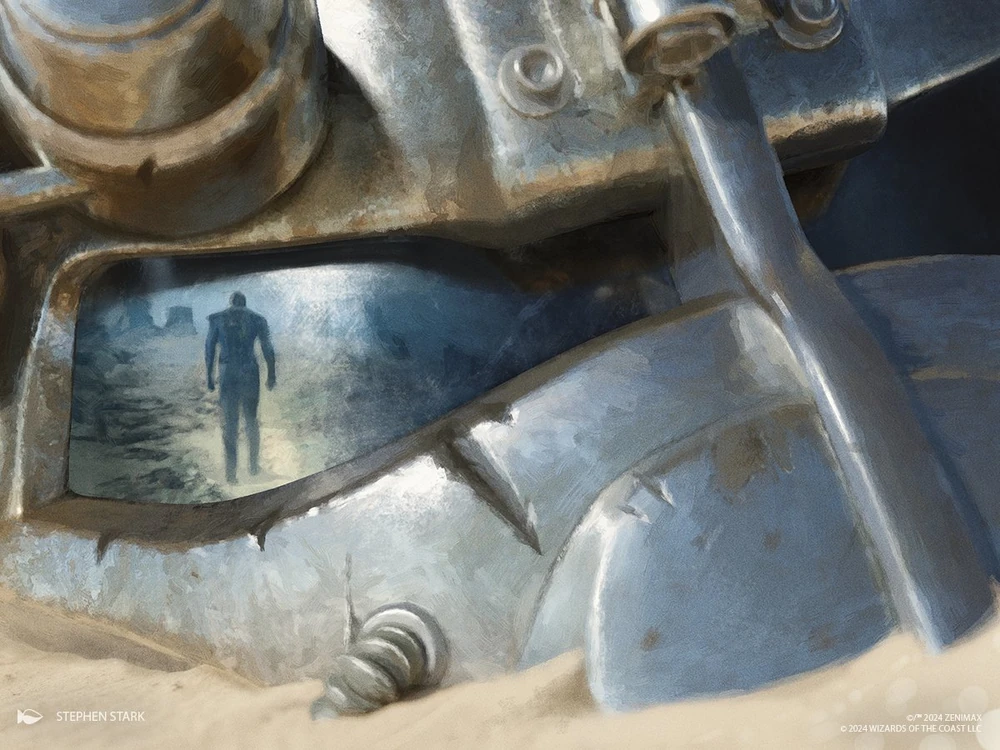
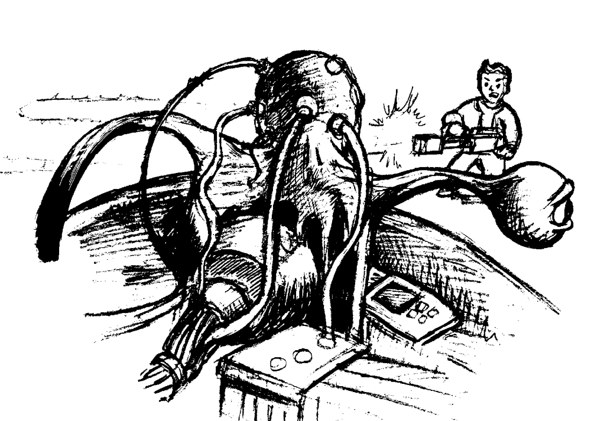
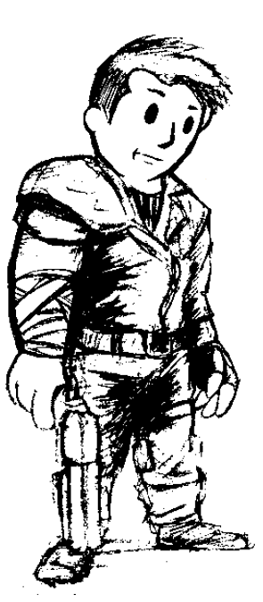
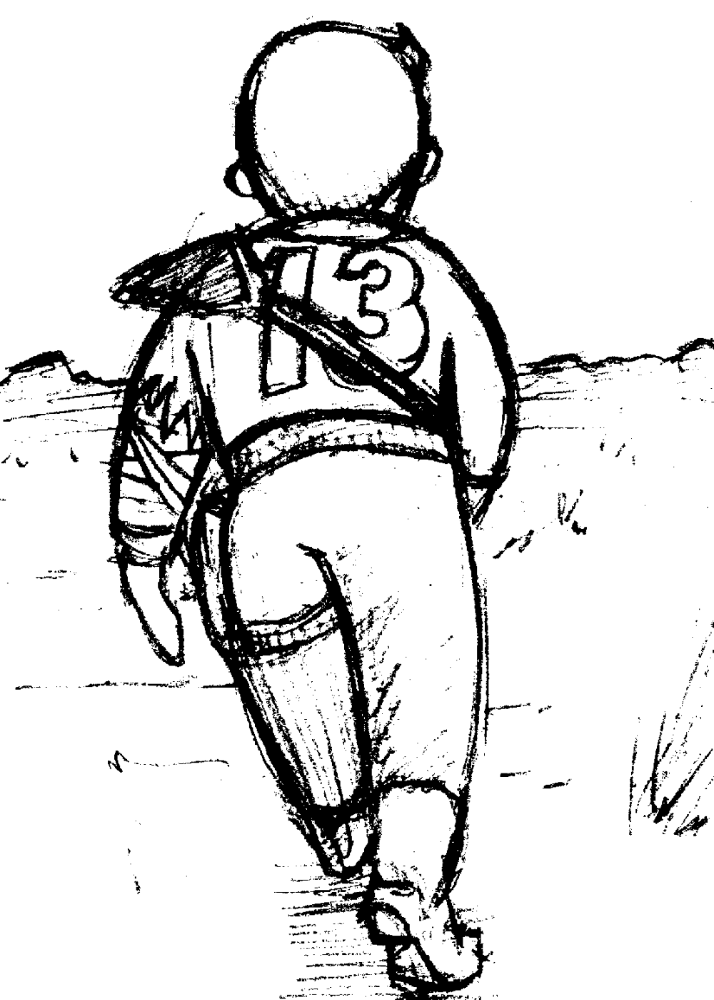
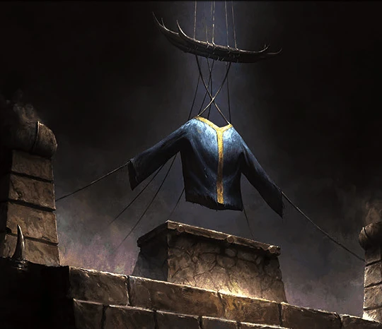

Vault Dweller (Vaultの居住者)
私には使命があった。
私には目標があった。
そして、私には本当に巨大な銃があった」
―― Vaultの居住者の回顧録
Vaultの居住者、またはワンダラー とも呼ばれる人物は、Fallout
のプレイヤーキャラクターです。
一般的な意味では「Vaultの住人」とは Vault-Tec のVaultに住むあらゆる人物を指すこともありますが、「Vaultの居住者」は Fallout の主人公を指す特定の用語です。
ゲーム内では、プレイヤーは16歳から35歳までの男性または女性のキャラクターを作成できます。
また、独自のバックストーリーを持つ3人の既成キャラクター（アルバート・コール、マックス・ストーン、ナタリア・ドゥブロフスキー）から一人を選んで
Vaultの居住者とすることもできます。
シリーズの正史では、後に男性として言及されています。

背景: ウォーターチップ
Vaultの居住者は Vault 13
の数百人の住人の一人でした。
彼はコミュニティとロボットの世話係によって育てられ、Vault内で平凡な生活を送っていました。
彼の旅は、Vaultが新鮮な水を作るために頼っていた浄水チップが故障した時に始まりました。
予備の部品もなく、代替システムも不可能だったため、監督官
は新しいチップを探すために誰かをVaultの外へ送り出さなければなりませんでした。
代替案がなかったため、Vault 13 の
監督官は、外に出るのに十分健康な特定の年齢層の全員を集め、くじ引きを行わせました。
Vaultの居住者は短い藁を引いてしまい、交換用のチップを見つけるために送り出されました。
彼は翌日の2161年12月5日にVaultを後にしました。
Vaultの居住者は最初の数日間、ラットや自然の脅威と戦いながら苦労しました。
Vault 15 の場所だけを手がかりに、彼は東へと出発しました。
その途中、彼はシェイディ・サンズ
という小さな集落に偶然たどり着きました。
Vaultの居住者は彼らを助け、信頼を得ました。
タンディとアラデシュはそのお返しに彼を助け、知識を共有しました。
イアンを雇った後、Vaultの居住者は埋もれたVaultへと進みました。
遺跡を探索した彼は、制御室とウォーターチップが何トンもの岩の下に埋もれているため役に立たないことを悟り、二人は先へと進みました。
カーンズと戦ってタンディを救出した後（これは意図せずして 新カリフォルニア共和国
の台頭への道を開くことになりました）、彼の旅は彼らをジャンクタウンへと導きました。
そこで彼は、共に過ごした期間において最も信頼できる友となる忠実な犬、ドッグミートと出会いました。
Vaultの居住者は、戦後のカリフォルニア最大の都市であるハブへと進みました。
ジャンクタウンと シェイディ・サンズ
を合わせたよりも大きなその場所は、彼がVaultの外で見た中で最も繁栄していましたが、強力な商人たちの影の下で荒涼とした生活を送る大都市の市民には生気がないと感じました。
しかし、これらの企業は
Vaultの居住者を助け、Vaultに水を供給し、ウォーターチップを見つける期限を延ばしてくれました。
都市で入手した手がかりにより、彼らはグールの都市であるネクロポリスへと導かれました。
そこで彼は、水源を守るスーパーミュータントと呼ばれる奇妙な巨大生物と戦いました。
Vaultの居住者は、ミュータントの火炎放射器によって焼き殺されたイアンを失い、打ちのめされました。
彼の燃える肉の記憶は、居住者の心に永遠に刻まれることになりました。
しかし、イアンの犠牲は無駄にはなりませんでした。
Vaultの居住者はウォーターチップを見つけ、それを持って
Vault 13 に戻ったからです。
ミュータントの脅威
彼の帰還の喜びは、彼がアーカイブに記録した報告によって損なわれました。
監督官は計算を行い、Vaultの居住者がネクロポリスで目撃した種類のミュータントは無視するにはあまりにも大きな脅威であると判断しました。
ミュータントに関する知識を持っていたため、監督官は
Vaultの居住者を再び送り出しました。
今回、彼はスーパーミュータントの脅威を一掃する任務を負いました。
後にこの状況は
Vaultの居住者を利用するものであったことが明らかになりましたが、当時はVaultへの忠誠心から彼は任務を遂行しました。
旅の中で、彼は B.O.S. と接触し、彼らの信頼を勝ち取り、ハイ・エルダーであるジョン・マクソン将軍と会うに至りました。

2162年、彼はザ・マスターと対峙するために大聖堂の地下へと潜入しました。
異形のものたちの間を歩きながら、彼はこれまでで最も恐ろしい光景、ザ・マスターと対戦しました。
ローブを脱ぎ捨て、武器を装備し、Vaultの居住者はザ・マスターを殺しました。
ザ・マスターの野望と計画は、核の炎と共に消え去りました。
残る標的はただ一つ、スーパーミュータントを作成するために使用された強制進化ウイルス のタンクでした。
2162年4月20日、Vaultの居住者は B.O.S.
とドッグミートの支援を受けてマリポーサ軍事基地に侵入し、自爆シーケンスを作動させました。
フォースフィールドの一つがドッグミートの命を奪いましたが、彼は施設を破壊し、英雄として Vault 13
に戻ることができました。

Vaultへの帰還と追放
5月10日、彼は帰還しましたが、監督官はVaultのドアの外で彼に会い、彼らの奉仕に感謝しましたが、その後彼を無期限に追放しました。
監督官は、居住者がウェイストランドでの生活によって変わってしまったため、これはすべてVaultを守るためであると主張しました。
苦々しさと怒りを感じながら、Vaultの居住者は去り、Vaultに背を向け、二度と振り返りませんでした。

アロヨの創設と遺産
悲しみに打ちひしがれ、彼は荒野を彷徨いましたが、やがて彼を追ってきたVault居住者たちと共に北へ向かいました。
オレゴン州南西部の到達困難な峡谷に、彼らは村を築き、アロヨと名付けました。
2167年、村は完成しました。
部族の長老となった彼は、追随者たちに生きる術を教えました。
彼はパットと結婚し、娘を授かりました。
2208年、彼はVaultスーツと回顧録を残してアロヨを去りました。
彼の遺産はアロヨと、新カリフォルニア共和国
という形で生き続けることになりました。
シェイディ・サンズを救った彼の功績を称え、NCRの首都には彼の像が建てられました。
数年後、彼の孫である「選ばれし者」が生まれ、人類を救う新たな旅に出ることになります。

所持品
Vaultの居住者 の物語は、Fallout シリーズ全体の原点にして頂点とも言える、英雄的かつ悲劇的な叙事詩ですね。
理不尽な追放: 命がけでVaultを救ったにもかかわらず、「英雄は故郷に帰れない」という古典的かつ残酷な結末（追放）を迎える点は、このシリーズが持つ「善行が必ずしも報われるとは限らない」というダークなテーマを象徴しています。
伝説の始祖: 彼（または彼女）の行動が、シェイディ・サンズ を救い、NCR の建国につながり、さらには選ばれし者 へと続く血統を生み出したことを考えると、たった一人の人間がウェイストランドの歴史に与えた影響の大きさに圧倒されます。
回顧録の重み: 「私には使命があった……そして巨大な銃があった」という言葉は、ユーモアと決意が入り混じった彼の人柄を表しており、プレイヤーにとっては忘れられない名言です。

This article was created by translating and editing Vaultの居住者 from Nukapedia: The Fallout Wiki.
Licensed under the Creative Commons Attribution-Share Alike License (CC BY-SA 3.0).
コミュニティ維持のため、寄付を受け付けております。
> COMMENTS